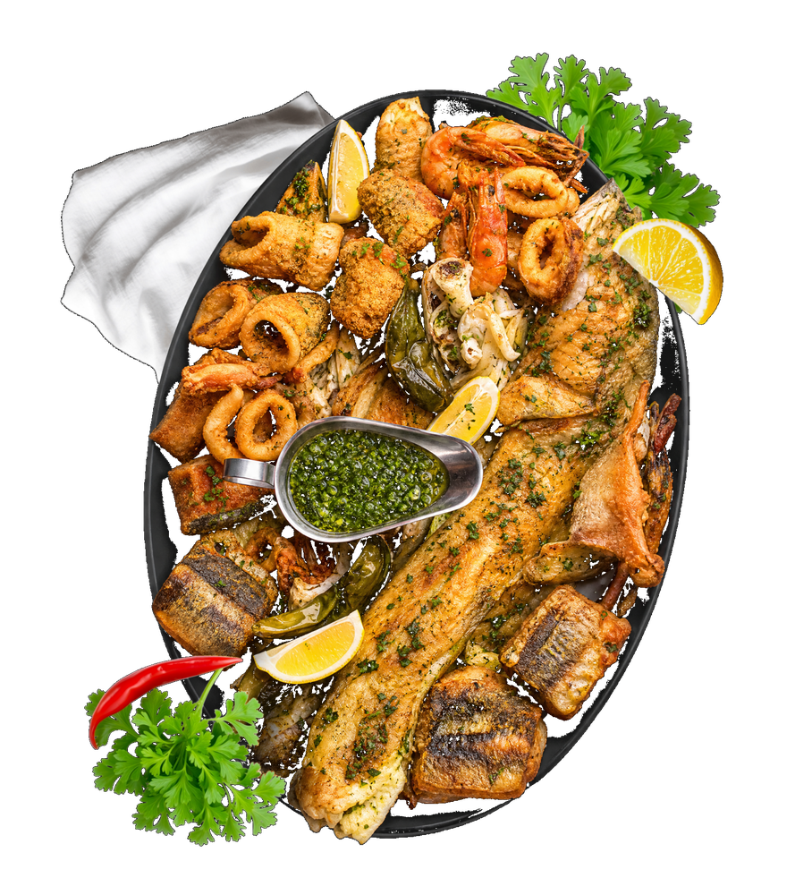
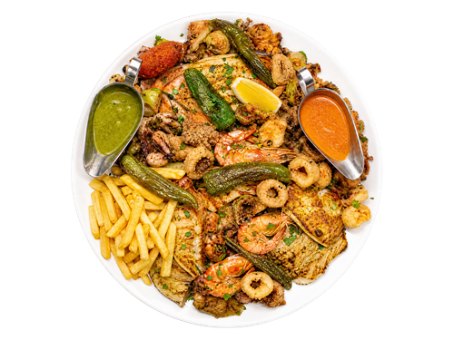
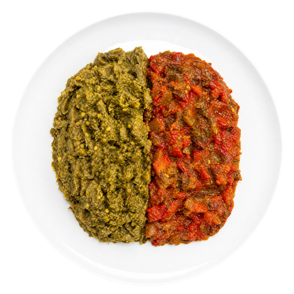
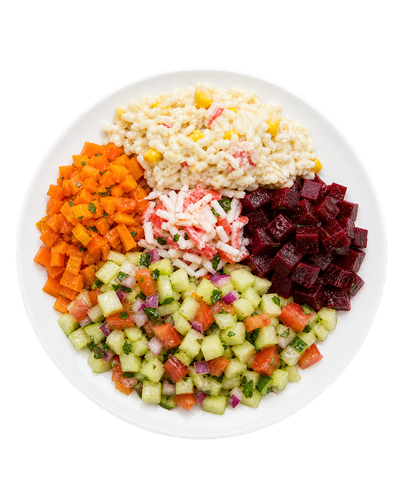

« Le concept de choisir son propre poisson à l'étal est génial. La cuisson grillée était parfaite, et les salades marocaines en accompagnement sont un vrai délice. Une adresse incontournable. »
M
Mehdi B.
Il y a 2 semaines
Des plateaux croustillants, des saveurs méditerranéennes authentiques et des moments inoubliables à partager en famille ou entre amis.

Notre concept est simple : sélectionnez votre poisson frais du jour, choisissez votre mode de cuisson, et laissez nos chefs faire la magie.
Parmi notre sélection quotidienne de poissons frais, crustacés et fruits de mer.
Grillé à la plancha, frit doré, ou en croûte de sel. C'est vous qui décidez.
Dégustez votre plat accompagné de nos salades marocaines traditionnelles.

Le croustillant parfait, secret de notre cuisine traditionnelle.

Caviar d'aubergines fumées, une recette transmise de génération en génération.

Fraîcheur et couleurs, l'accompagnement parfait pour tous nos plats.
Un généreux assortiment de poissons grillés, fritures dorées et fruits de mer — l'incontournable à partager de L'Océan.
« Le concept de choisir son propre poisson à l'étal est génial. La cuisson grillée était parfaite, et les salades marocaines en accompagnement sont un vrai délice. Une adresse incontournable. »
Il y a 2 semaines
« Une fraîcheur exceptionnelle. On sent vraiment la qualité des produits. Le fritto misto est léger et croustillant. Le cadre sombre et élégant ajoute vraiment à l'expérience. »
Il y a 1 mois
« Très belle découverte. Le service est aux petits soins pour vous expliquer les différents poissons du jour. Le thé à la menthe pour terminer le repas était parfait. »
Il y a 2 mois